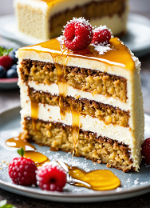
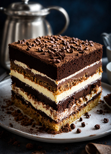
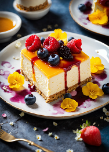

Наполеон
1300 ₽/кг
Медовик
1450 ₽/кг
Тирамису
1100 ₽/кг
Чизкейк
800 ₽/кг
Наполеон - идеальное сочетание нежных слоев тонкого теста
и воздушного сливочного крема. Изящный торт, который тает во рту.
Медовик - идеальное сочетание пышных коржей, пропитанных медом,
и нежного сливочного крема. Насыщенный вкус и аромат уносят прямо в детство.
Наслаждайтесь этой классической русской сладостью!
Тирамису - нежный и изысканный итальянский десерт.
Слои пропитанного кофе бисквита чередуются с воздушным кремом на основе маскарпоне.
Ароматный и насыщенный вкус, который погружает вас в итальянскую атмосферу.
Чизкейк "Птичье молоко" - нежный и воздушный десерт с основой из крема и
шоколадного печенья. Истинное наслаждение для сладкоежек.